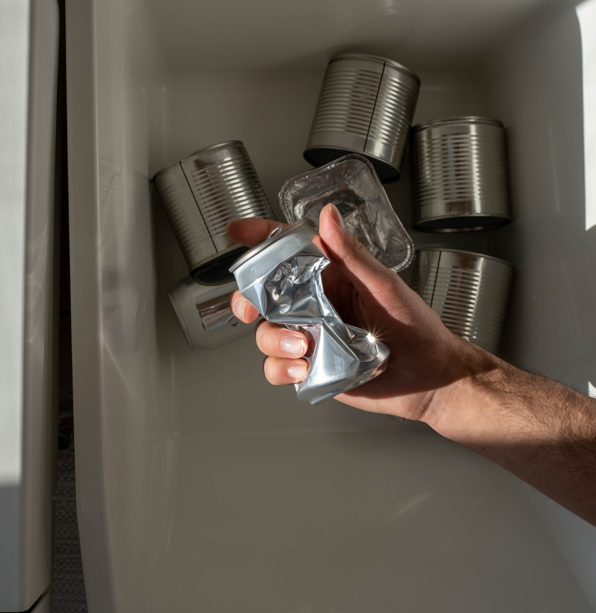

1. Know Your Recycling Bins
Learn which materials are accepted in your local recycling program. This can vary from place to place, so make sure you're recycling the right items. Taking the time to understand these guidelines not only promotes environmental responsibility but also ensures the success of recycling initiatives within your community.

2. Rinse and Empty Containers
Before tossing items into the recycling bin, rinse them to remove any remaining food or liquids. Clean containers are easier to recycle, enhancing the efficiency of the recycling process and supporting the overall quality of recycled materials.
3. Reduce Plastic Use
Avoid single-use plastics and choose reusable alternatives. This can significantly reduce the amount of plastic waste in the environment.Avoid single-use plastics and choose reusable alternatives. This can significantly reduce the amount of plastic waste in the environment, fostering a sustainable lifestyle and contributing to the preservation of our planet for future generations.

4. Recycling a Variety of Materials
Various materials can be recycled to promote environmental sustainability. These include metals such as aluminum and steel, paper, cardboard, plastics (with proper sorting), glass, and organic materials. Recycling these elements contributes to resource conservation, waste reduction, and energy efficiency in the production of new products.